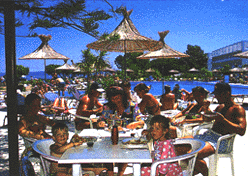
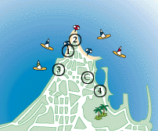
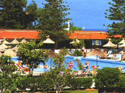

Tjæreborg Center og Hoteller på Rhodos

| 
|
TJÆREBORG CENTER
Her stortrives hele familien med aktiviteter for alle aldersgrupper. Golden Beach ligger i Ialyssos og like ved byen Trianda, hvor det finnes forretninger og hyggelige, lokale tavernaer.
|
|
Golden Beach
Tjæreborg Center Golden Beach ligger direkte ut til havet med en lang grovkornet strand. Her er det alltid en lett bris som kommer innover bassengområdet, og det er windsurfernes paradis på Rhodos. Centret byr på aktiviteter for alle aldersgrupper: Barna har det morsomt i Tjæreborgs Teddy Club hvor det f.eks. er skattejakt, leker ved bassenget og morsomme konkurranser. De voksne har det heller ikke kjedelig. For morgenfuglene er det morgengymnastikk, og i løpet av dagen er det andre innslag som f.eks. vannpolo, boccia eller crazy golf. På slutten av ettermiddagen er det "happy hour" i baren hvor vi møtes for å spille bingo og er med på gjettekonkurranser. Etter en dag med mange aktiviteter er restauranten et hyggelig samlingspunkt med underholdning og show for hele familien. Golden Beach har en flott beliggenhet med et stort grønt parkområde. Tjæreborg Center henvender seg til alle aldersgrupper, og du bestemmer selv tempoet. Ønsker du å se mer av øya - enten på Tjæreborgs turer eller på egen hånd, kan du kontakte Tjæreborgs Servicekontor som har åpent det meste av uken. Her hjelper guidene med praktiske råd om reisemålet og gir tips om alle de mulighetene du har for å få en perfekt ferie.

GOLDEN BEACH
| 
|
| Strand | 0 m | Restaurant | Ja | Etasjer | 3-6
|
| Supermarked | Ja | Bar | Ja | Heis | -
|
| Til buss | 10 m | TV-rom | Ja | Senger | 656
|
| Sentrum | 10 km | Salong | Ja | Tlf. i leil./rom | Ja
|
| Basseng | Ja | Resepsjon | Ja | TV i leil./rom | -
|
| Barnebass. | Ja | Deponering | Ja | Kjøleskap | Ja
|
| Solterrasse | Ja | Elektrisitet | 220 v | Byggeår | 1967/89
|
LEILIGHETER KATEGORI 2+
Et riktig ferieparadis beliggende 800 m fra den lille byen, Trianda. Anlegget som består av 7 bygninger ligger i et strandområde med hotellbebyggelse og lokaltrafikk. Av fasiliteter finnes et stort svømmebasseng med gratis solstoler, hage, diskotek, trimrom og sauna (1 times gratis trening uten sauna), 2 tennisbaner, minigolf, biljard, bordtennis og lekeplass. Windsurfing på stranden. Underholdningsprogram om kvelden flere ganger i uken, samt ulike aktiviteter for barn og voksne i løpet av dagen. Alle leiligheter har TV og kjøkkenkrok.
Adr.: Ialyssos, GR-85100 Rhodos.
Tlf.: 00 30 241/92 411 og 92 417. Fax: 00 30 241/92 416.
1-roms leilighetene kategori 2+ er beliggende i blokk 1, 2 og 3, alle i 3 etasjer uten heis. Hotellværelsene kategori 2+ er beliggende i blokk 4 og 5, begge i 4 etasjer uten heis. 2-roms leilighetene kategori 3+ er beliggende i blokk 6 og 7. Blokk 6 har 6 etasjer, blokk 7 har 5 etasjer, begge med heis fra 1.-3.etasje. Lange bukser er obligatorisk for herrene ved middagen. Flystøy.
HOTELLER PÅ RHODOS
ATHINEON
| Strand | 1,9 km | Restaurant | Ja | Etasjer | 5
|
| Supermarked | Ja | Bar | Ja | Heis | Ja
|
| Til buss | 25 m | TV-rom | Ja | Senger | 138
|
| Sentrum | 1,5 km | Salong | Ja | Tlf. i leil./rom | Ja
|
| Basseng | Ja | Resepsjon | Ja | TV i leil./rom | -
|
| Barnebass. | Ja | Deponering | Ja | Kjøleskap | -
|
| Solterrasse | Ja | Elektrisitet | 220 v | Byggeår | 1990
|
LEILIGHETER KATEGORI 3+
Fint leilighetsanlegg med gode fasiliteter. Anlegget er beliggende i et byområde med lokaltrafikk, bak den gamle bydel, og ca. 100 m fra handelshavnen. Av fasiliteter finnes bl.a. en poolbar, gratis solstoler og
parasoller, snackbar, a la carte restaurant, supermarked og sauna, samt en liten lekeplass. Leilighetene er store og lyse holdt i friske farger. Det er hårtørrer i leilighetene, og TV kan leies. I tillegg er det aircondition i
leilighetene i de varmeste månedene, men ikke hele døgnet.
Adr.: 17, Vironos Str., GR-85100 Rhodos.
Tlf.: 00 30 241/26 112. Fax: 00 30 241/26 459.
Rengjøring hver dag.
AGLAIA
| Strand | 200m | Restaurant | - | Etasjer | 7
|
| Supermarked | 20 m | Bar | Ja | Heis | Ja
|
| Til buss | 150 m | TV-rom | Ja | Senger | 230
|
| Sentrum | 700 m | Salong | Ja | Tlf. i leil./rom | Ja
|
| Basseng | Ja | Resepsjon | Ja | TV i leil./rom | -
|
| Barnebass. | - | Deponering | Ja | Kjøleskap | Ja
|
| Solterrasse | Ja | Elektrisitet | 220 v | Byggeår | 1969/92
|
HOTELL
KATEGORI 2+
Eldre, populært hotell beliggende i Rhodos by, i et område med hotell-
bebyggelse og lokaltrafikk, og kun få minutters spasertur til sentrum av den nye bydelen. Hotellet har en liten hage med solterrasse og svømmebasseng med gratis solstoler og parasoller, samt biljard. Hotellet ble
renovert 1991/92, og alle værelser har bl.a. hårtørrer, elektrisk kjele og kaffekopper.
Adr.: Apollonos Amerikis 35, GR-85100 Rhodos.
Tlf.: 00 30 241/22 061 eller 22 062. Fax: 00 30 241/ 34 984.
Noe trafikkstøy. Da bussen ikke kan kjøre helt fram til hotellet, er det ca. 100 m å spasere med bagasjen ved ankomst/avreise.
COSTAS
| Strand | 250m | Restaurant | - | Etasjer | 3
|
| Supermarked | Ja | Bar | - | Heis | -
|
| Til buss | 150 m | TV-rom | - | Senger | 32
|
| Sentrum | 500 m | Salong | - | Tlf. i leil./rom | Ja
|
| Basseng | - | Resepsjon | Ja | TV i leil./rom | -
|
| Barnebass. | - | Deponering | Ja | Kjøleskap | Ja
|
| Solterrasse | - | Elektrisitet | 220 v | Byggeår | 1987
|
LEILIGHETER KATEGORI 2
Leilighetsanlegg, sentralt beliggende i utkanten av Rhodos by og med kort vei til stranden, butikker, restauranter og nattelivet. Man kan velge mellom 1- og 2-romsleiligheter som alle har bad, kjøkkenkrok med nødvendig utstyr, samt en stor balkong. Adr.: Kritis str., GR-85100 Rhodos. Tlf.: 00 30 241/32 536. Ingen fax.
Trafikkstøy og støy fra nærliggende barer. Uegnet for folk med gangbesvær.
PEARL
| Strand | 500 m | Restaurant | - | Etasjer | 6
|
| Supermarked | 50 m | Bar | Ja | Heis | Ja
|
| Til buss | 100 m | TV-rom | Ja | Senger | 90
|
| Sentrum | 600 m | Salong | Ja | Tlf. i leil./rom | Ja
|
| Basseng | - | Resepsjon | Ja | TV i leil./rom | -
|
| Barnebass. | - | Deponering | Ja | Kjøleskap | -
|
| Solterrasse | - | Elektrisitet | 220 v | Byggeår | 1969/72
|
HOTELL
KATEGORI 1
Enkelt hotell, velegnet for unge mennesker. Beliggende midt i Rhodos by, med kort vei til strand, restauranter, butikker og uteliv. Hotellet har kombinert bar og frokostrom. Små værelser som alle har bad og balkong.
Adr.: Griva Str. 15, GR-85100 Rhodos.
Tlf.: 00 30 241/22 420 eller 22 421. Ingen fax.
Gatestøy og støy fra nærliggende barer. Hotellet er i høysesongen utgangspunkt for vårt Beach & Boogie-program, og en del støy kan derfor forekomme.
![[Tjæreborg-Hjemmeside]](http:img/icon.gif)
![[SN Horisont]](http://www.sn.no/img/horisont.gif)